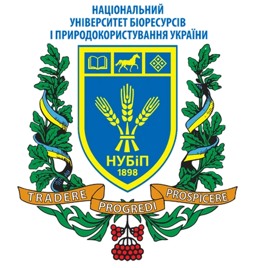

Нанобіотехнології
Фулерен C₆₀ і вуглецеві наноматеріали для підвищення стресостійкості пшениці та гороху за водного дефіциту.
Будь ласка, опишіть проблему, з якою Ви зіткнулися, нам у Facebook.
Група кафедри у Facebook
НУБіП УкраїниФакультет захисту рослин, біотехнологій та екологіїВітаємо на сайті кафедри! Ми продовжуємо одну з найстаріших в Україні шкіл фізіології рослин, засновану 1898 року, і поєднуємо її з біохімією, біоенергетикою та сучасними біотехнологіями. Тут ви дізнаєтеся про кафедру й освітні програми, в «Онлайн лабораторії» зможете самі «поставити» досліди, а в «Конспекті» — знайти наочні матеріали до занять.
Кафедра фізіології, біохімії рослин та біоенергетики — одна з найстаріших фундаментальних науково-освітніх ланок НУБіП України.
Її історія починається 1898 року з кафедри ботаніки сільськогосподарського відділення Київського політехнічного інституту, яку заснував академік ВУАН Євген Пилипович Вотчал — основоположник української школи фізіологів рослин. Сьогодні кафедра поєднує класичну фізіологію та біохімію рослин із клітинною біоінженерією, фітовірусологією, нанобіотехнологіями, біоенергетикою та моніторингом біосистем.
Ми готуємо здобувачів вищої освіти за ступенями «Бакалавр», «Магістр» і «Доктор філософії» та викладаємо українською й англійською мовами для студентів більш ніж десяти спеціальностей університету.
Детальніше про кафедруВід трьох кафедр ентомології та фітопатології 1962 року до сучасного факультету захисту рослин, біотехнологій та екології.
ЧитатиДекан і заступники декана з навчальної, наукової та міжнародної, а також виховної роботи. Контакти деканату.
ПереглянутиБакалаврат, магістратура та аспірантура PhD: спеціальності, програми й дисципліни кафедри.
Обрати рівеньВикладачі, їхні дисципліни, наукові інтереси, публікації та міжнародні стажування.
ПознайомитисяВід фундаментальних механізмів стійкості рослин до штучного інтелекту в моніторингу біорізноманіття.
Фулерен C₆₀ і вуглецеві наноматеріали для підвищення стресостійкості пшениці та гороху за водного дефіциту.
Віруси пшениці (WDV, WSMV), бузини, півонії, сої; ІФА та трансмісійна електронна мікроскопія.
Фітопатогенні бактерії, ризосферні PGPB та біопрепарати для екологічно безпечного захисту рослин.
Грант НФДУ «Dark Taxa» у Карпатах, ДНК-баркодинг, система Febris з розумними пастками.
03041, м. Київ, вул. Героїв Оборони, 13
Навчальний корпус № 4, кімн. 13
physiol.biochem2021@gmail.com
В. о. завідувача: l.m.butsenko@gmail.com
Новини та фотозвіти кафедри: група «nubipplants»